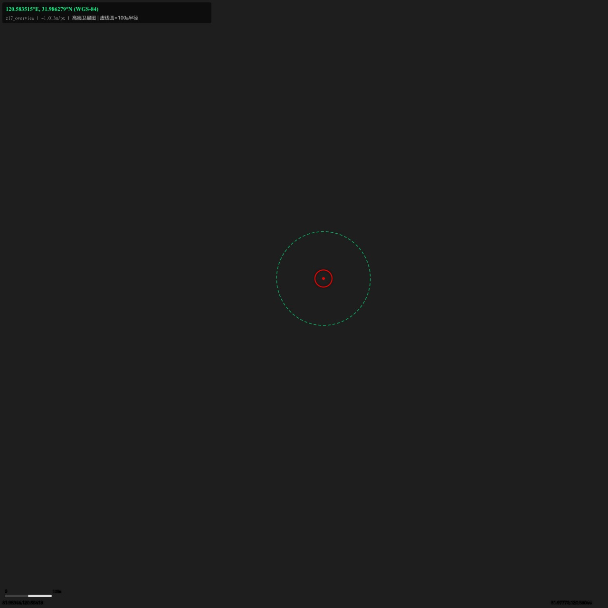
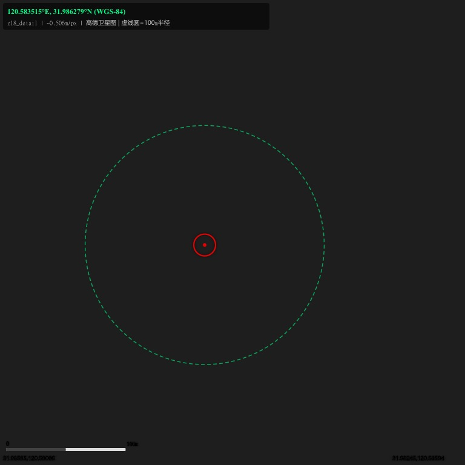
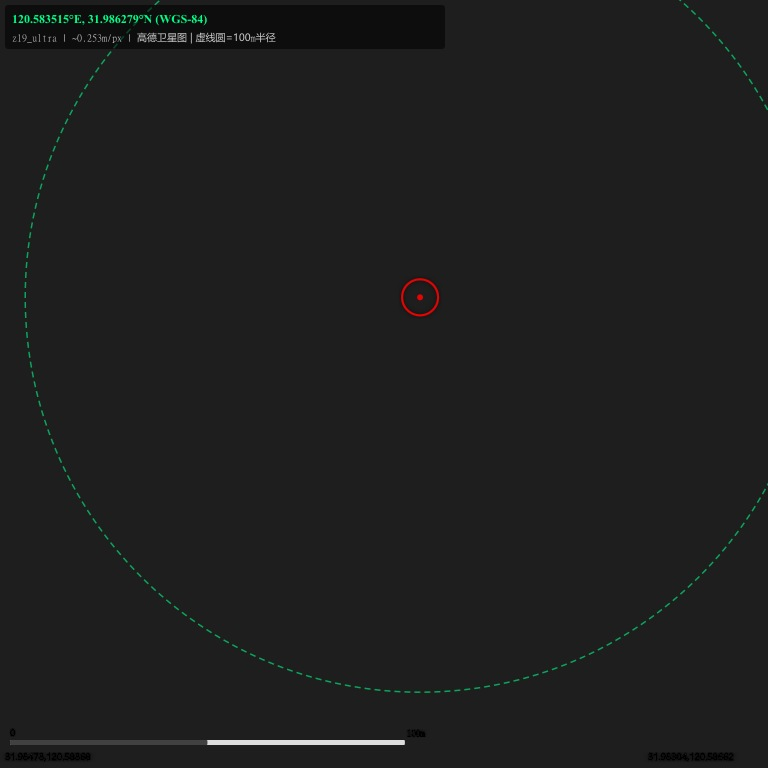

卫星地图核查视图 — 高德卫星图
WGS-84: 120.583515°E, 31.986279°N | 江苏省苏州市张家港市锦丰镇沿江
📍 WGS-84: 120.583515°E, 31.986279°N
🗺️ 坐标系统: GCJ-02 (高德/国标) — WGS-84 已自动转换
🛰️ 数据源: 高德卫星图 (webst0{1-4}.is.autonavi.com)
🔴 红色十字 = 目标位置 | 绿色虚线圈 = 100m 半径
━━ 红色十字 = 目标坐标
┅┅ 绿色虚线圆 = 100m 半径
底部 = 100m 比例尺
z17_overview 1.01m/px
1280x1280px | 覆盖 1297m x 1297m
范围(GCJ-02): [120.58044, 120.59418] x [31.97779, 31.98944]

z18_detail 0.51m/px
768x768px | 覆盖 389m x 389m
范围(GCJ-02): [120.58594, 120.59006] x [31.98245, 31.98595]

z19_ultra 0.25m/px
768x768px | 覆盖 194m x 195m
范围(GCJ-02): [120.58662, 120.58868] x [31.98304, 31.98478]

⚠️ 注意:
• 高德卫星图为当前最新影像，无法回溯历史日期
• 430/531 核查需采购 2025年3-6月历史存档影像
• z18 (0.5m/px) 即可满足光伏板面积识别，可清楚分辨屋顶光伏阵列